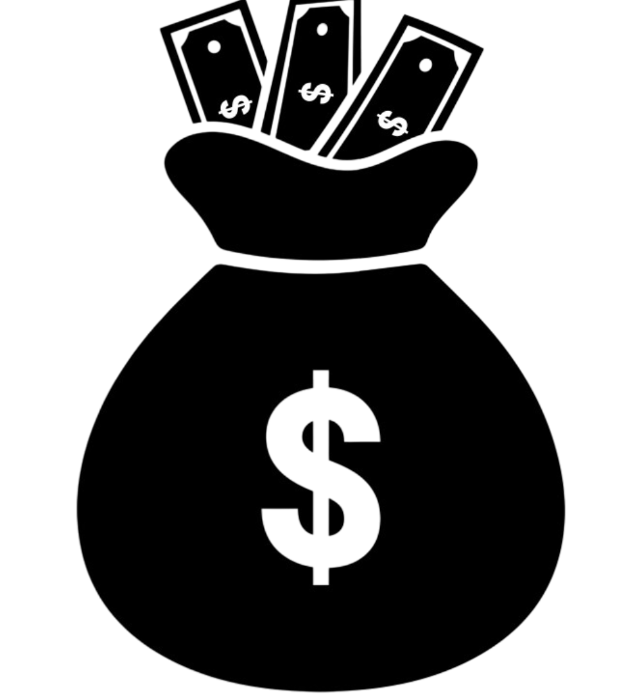

Menabung (Saving)
Pentingnya Menabung untuk Tujuan Jangka Pendek dan Jangka Panjang
Menabung adalah salah satu pilar utama dalam pengelolaan keuangan yang sehat. Ia bukan sekadar menyimpan uang yang tersisa dari pengeluaran, tetapi tindakan sadar untuk mempersiapkan kebutuhan masa depan dan melindungi diri dari ketidakpastian hidup. Dalam konteks edukasi literasi keuangan dasar, memahami urgensi menabung menjadi langkah pertama yang sangat krusial.
 1. Tujuan Jangka Pendek
Menabung untuk kebutuhan jangka pendek mencakup berbagai kebutuhan harian yang bersifat mendesak namun masih bisa diprediksi. Contohnya antara lain:
- Dana darurat untuk keperluan tak terduga seperti servis kendaraan, pengobatan ringan, atau pemeliharaan rumah.
- Pembelian barang elektronik, perlengkapan sekolah, hingga persiapan liburan.
- Persiapan biaya pendidikan semester, iuran organisasi, atau keperluan transportasi bulanan.
Dengan menabung untuk tujuan jangka pendek, seseorang tidak perlu panik atau berutang saat ada kebutuhan mendesak. Hal ini juga membantu menjaga kestabilan pengeluaran bulanan agar tidak mengalami defisit.
2. Tujuan Jangka Panjang
Tujuan jangka panjang melibatkan perencanaan keuangan dalam rentang waktu lebih dari satu tahun. Ini termasuk:
- Dana pendidikan anak, dari TK hingga perguruan tinggi.
- Persiapan dana pensiun agar bisa tetap mandiri di masa tua.
- Investasi untuk rumah, kendaraan, atau membuka usaha.
- Dana untuk biaya kesehatan besar seperti operasi atau pengobatan lanjutan.
Menabung secara konsisten untuk jangka panjang melatih seseorang untuk berpikir ke depan, mengembangkan disiplin keuangan, dan memperkuat daya tahan terhadap inflasi. Ia juga menciptakan rasa aman psikologis karena tahu bahwa masa depan sudah direncanakan dan dipersiapkan.
3. Menghindari Ketergantungan dan Mengembangkan Kemandirian Finansial
Kebiasaan menabung secara berkala menciptakan ruang finansial untuk bertindak secara mandiri tanpa bergantung pada orang lain. Ini juga menjadi bukti kontrol diri seseorang dalam mengelola keinginan konsumtif.
4. Perlindungan terhadap Ketidakpastian
Menabung memberi ketenangan batin saat menghadapi masa depan yang tidak pasti. Bencana, PHK, penyakit, atau krisis ekonomi tidak akan terlalu mengguncang jika ada dana simpanan yang dapat diakses.
5. Menumbuhkan Disiplin Finansial
Mereka yang terbiasa menabung cenderung memiliki disiplin dalam membelanjakan uang dan cermat dalam membedakan antara kebutuhan dan keinginan. Ini membentuk karakter keuangan yang sehat sejak usia dini.
Menabung bukan hanya soal nominal yang disisihkan, tetapi tentang cara pandang terhadap masa depan dan bagaimana membentuk kebiasaan finansial yang berkelanjutan.
Menentukan Tujuan Tabungan yang Spesifik dan Membuat Rencana untuk Mencapainya
Menabung menjadi jauh lebih efektif ketika dilandasi oleh tujuan yang jelas. Tujuan yang spesifik memberikan arah, motivasi, dan target konkret yang bisa dicapai. Tanpa tujuan, aktivitas menabung rentan terhenti di tengah jalan karena kehilangan makna atau arah.
1. Pentingnya Tujuan yang Spesifik
Tujuan yang jelas akan menjawab pertanyaan: "Untuk apa saya menabung?" Jawaban seperti "untuk membeli motor 1 tahun lagi" atau "untuk dana liburan akhir tahun sebesar 3 juta" jauh lebih efektif dibanding sekadar "biar punya uang".
- Memberi arah dan orientasi
- Menumbuhkan rasa tanggung jawab
- Meningkatkan komitmen jangka panjang
2. Langkah Membuat Rencana Tabungan yang Efektif
Menabung berdasarkan rencana akan lebih terstruktur dan terukur. Berikut langkah-langkah praktisnya:
- Menentukan tujuan dan nominal tabungan
- Menentukan tenggat waktu atau durasi pencapaian
- Membagi nominal menjadi target harian/mingguan/bulanan
- Memilih metode menabung: manual, auto-debit, amplop fisik, atau aplikasi digital
- Melakukan evaluasi berkala untuk memastikan progres berjalan sesuai rencana
3. Konsistensi Lebih Penting dari Jumlah
Menabung tidak harus dimulai dari jumlah besar. Yang lebih penting adalah kebiasaan dan konsistensinya. Menyisihkan Rp5.000–Rp10.000 per hari pun dapat terakumulasi menjadi angka yang signifikan dalam jangka waktu tertentu.
4. Peran Visualisasi dan Motivasi
Menuliskan tujuan di buku, menempelkan gambar target (misalnya gambar rumah, kendaraan, atau tempat liburan) dapat membantu memperkuat niat dan mengingatkan pada alasan utama kenapa kita menabung.
5. Fleksibilitas dan Penyesuaian
Tidak semua rencana berjalan sempurna. Penting untuk fleksibel dan realistis jika kondisi keuangan berubah. Yang utama adalah tetap menjaga komitmen dan tidak kehilangan tujuan.
Menentukan tujuan tabungan adalah seni menghubungkan masa kini dengan masa depan. Dengan tujuan yang jelas dan rencana yang terukur, proses menabung menjadi lebih menyenangkan dan bermakna.
Memilih Jenis Tabungan yang Sesuai dengan Kebutuhan dan Profil Risiko
Setiap individu memiliki kebutuhan dan toleransi risiko yang berbeda. Oleh karena itu, memilih jenis tabungan tidak bisa dilakukan secara sembarangan. Literasi keuangan mengajarkan bahwa kita perlu memahami berbagai produk tabungan serta kecocokannya dengan tujuan keuangan kita.
1. Jenis-Jenis Tabungan Populer
- Tabungan Reguler: Cocok untuk kebutuhan harian, dapat ditarik kapan saja, mudah diakses melalui ATM dan mobile banking.
- Tabungan Berjangka: Tabungan dengan komitmen setoran tetap per bulan selama jangka waktu tertentu. Cocok untuk tujuan jangka menengah seperti biaya pendidikan atau dana menikah.
- Deposito: Uang disimpan dalam jangka waktu tertentu dengan bunga lebih tinggi. Tidak fleksibel tapi cocok untuk dana yang tidak akan digunakan dalam waktu dekat.
- Tabungan Emas: Berbasis harga emas, cocok sebagai penyimpan nilai jangka panjang dan perlindungan dari inflasi.
- Tabungan Digital (E-saving): Berbasis aplikasi, biasanya tanpa biaya administrasi, cocok untuk generasi muda yang tech-savvy.
2. Menyesuaikan dengan Tujuan dan Karakter Keuangan
- Jika seseorang membutuhkan fleksibilitas tinggi, maka tabungan reguler adalah pilihan tepat.
- Jika memiliki target jangka menengah dan ingin lebih disiplin, maka tabungan berjangka atau auto-debit lebih cocok.
- Bagi yang ingin dana tetap aman dan menghindari godaan konsumtif, deposito dapat menjadi opsi utama.
- Untuk perlindungan nilai di masa depan, tabungan emas atau produk investasi ringan bisa dipertimbangkan.
3. Pertimbangan dalam Memilih
- Biaya administrasi bulanan
- Suku bunga atau potensi keuntungan
- Minimum setoran awal dan saldo minimum
- Kemudahan akses dan layanan digital
- Promo atau cashback dari bank/fintech
4. Tabungan dan Teknologi
Tabungan digital kini hadir dengan fitur seperti pengingat, kalkulator target, dan auto-transfer. Bahkan beberapa aplikasi menyuguhkan laporan progres yang menarik secara visual, yang membuat proses menabungterasa seperti bermain game yang menyenangkan.
Memilih jenis tabungan yang sesuai dengan kebutuhan bukan hanya soal efisiensi, tapi juga mencerminkan kedewasaan dalam mengelola uang dan menyusun strategi masa depan.